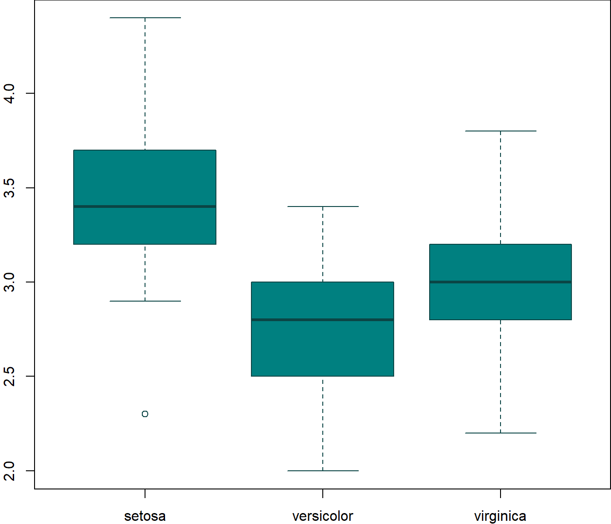

Make better posters with RMarkdown + posterdown.
A Better Reproducible Poster Title
Madison Chin 1
mjc611@scarletmail.rutgers.edu
Another G. Contributor 2
ag.con@posterdown.net
Person Three3 Person Four2 Person Five3 Person Six3 A. Seventh Author2
1 Department of Earth Science, Brock University
2 Department of Graphics and Layouts, University of Posters; Canada
3 Another Institute of a place where work gets done, Earth, Milky Way
Header 1
Header 2
Header 3
## mpg cyl disp hp drat wt qsec vs am gear carb
## Mazda RX4 21.0 6 160.0 110 3.90 2.620 16.46 0 1 4 4
## Mazda RX4 Wag 21.0 6 160.0 110 3.90 2.875 17.02 0 1 4 4
## Datsun 710 22.8 4 108.0 93 3.85 2.320 18.61 1 1 4 1
## Hornet 4 Drive 21.4 6 258.0 110 3.08 3.215 19.44 1 0 3 1
## Hornet Sportabout 18.7 8 360.0 175 3.15 3.440 17.02 0 0 3 2
## Valiant 18.1 6 225.0 105 2.76 3.460 20.22 1 0 3 1
## Duster 360 14.3 8 360.0 245 3.21 3.570 15.84 0 0 3 4
## Merc 240D 24.4 4 146.7 62 3.69 3.190 20.00 1 0 4 2
## Merc 230 22.8 4 140.8 95 3.92 3.150 22.90 1 0 4 2
## Merc 280 19.2 6 167.6 123 3.92 3.440 18.30 1 0 4 4
## Merc 280C 17.8 6 167.6 123 3.92 3.440 18.90 1 0 4 4
## Merc 450SE 16.4 8 275.8 180 3.07 4.070 17.40 0 0 3 3
## Merc 450SL 17.3 8 275.8 180 3.07 3.730 17.60 0 0 3 3
## Merc 450SLC 15.2 8 275.8 180 3.07 3.780 18.00 0 0 3 3
## Cadillac Fleetwood 10.4 8 472.0 205 2.93 5.250 17.98 0 0 3 4
## Lincoln Continental 10.4 8 460.0 215 3.00 5.424 17.82 0 0 3 4
## Chrysler Imperial 14.7 8 440.0 230 3.23 5.345 17.42 0 0 3 4
## Fiat 128 32.4 4 78.7 66 4.08 2.200 19.47 1 1 4 1
## Honda Civic 30.4 4 75.7 52 4.93 1.615 18.52 1 1 4 2
## Toyota Corolla 33.9 4 71.1 65 4.22 1.835 19.90 1 1 4 1
## Toyota Corona 21.5 4 120.1 97 3.70 2.465 20.01 1 0 3 1
## Dodge Challenger 15.5 8 318.0 150 2.76 3.520 16.87 0 0 3 2
## AMC Javelin 15.2 8 304.0 150 3.15 3.435 17.30 0 0 3 2
## Camaro Z28 13.3 8 350.0 245 3.73 3.840 15.41 0 0 3 4
## Pontiac Firebird 19.2 8 400.0 175 3.08 3.845 17.05 0 0 3 2
## Fiat X1-9 27.3 4 79.0 66 4.08 1.935 18.90 1 1 4 1
## Porsche 914-2 26.0 4 120.3 91 4.43 2.140 16.70 0 1 5 2
## Lotus Europa 30.4 4 95.1 113 3.77 1.513 16.90 1 1 5 2
## Ford Pantera L 15.8 8 351.0 264 4.22 3.170 14.50 0 1 5 4
## Ferrari Dino 19.7 6 145.0 175 3.62 2.770 15.50 0 1 5 6
## Maserati Bora 15.0 8 301.0 335 3.54 3.570 14.60 0 1 5 8
## Volvo 142E 21.4 4 121.0 109 4.11 2.780 18.60 1 1 4 2Introduction
This is the posterdown_betterport template for the {posterdown} package! I was inspired by the twitter thread of Mike Morrison and wanted to apply the #betterposter concept to the reproducible (yet simple to use) functionality of the {posterdown} package (Thorne 2019). If you’re not an R user don’t sweat as you do NOT need to use it at all! Feel free to use only the Markdown functionality of this package :)
Objectives
- Pick a template layout.
- Write/ create your poster content distraction free.
- Let posterdown do its thing!
Methods
I will show here how to include poster elements that may be useful, such as an equation using mathjax:
\[ E = mc^2 \]
To reference a citation you can add your .bib file to the working directory and name it in the YAML metadata or generate an automated one as done here, then you only need to reference the label value in the .bib file. For example this package is built on top of the wonderful {pagedown} package and I will cite it at the end of this sentance using this in the rmd [@R-pagedown] (Xie et al. 2024).
To get a better understanding of how to include features like these please refer to the {posterdown} wiki.
Now on to the results!
Results
Here you may have some figures to show off, bellow I have made a scatterplot with the infamous Iris dataset and I can even reference to the figure automatically like this, Figure \@ref(fig:irisfigure), Figure 1.
 from the legend himself, [Yihui Xie](https://twitter.com/xieyihui).](Poster_ICMA_2024Nov11_files/figure-html/irisfigure-1.png)
Figure 1: Here is a caption for the figure. This can be added by using the “fig.cap” option in the r code chunk options, see this link from the legend himself, Yihui Xie.
Maybe you want to show off some of that fancy code you spent so much time on to make that figure, well you can do that too! Just use the echo=TRUE option in the r code chunk options, Figure 2!
#trim whitespace
par(mar=c(2,2,0,0))
#plot boxplots
boxplot(iris$Sepal.Width~iris$Species,
col = "#008080",
border = "#0b4545",
ylab = "Sepal Width (cm)",
xlab = "Species")

Figure 2: Boxplots, so hot right now!
How about a neat table of data? See, Table 1:
|
Sepal Length |
Sepal Width |
Petal Length |
Petal Width |
Species |
|---|---|---|---|---|
| 5.1 | 3.5 | 1.4 | 0.2 | setosa |
| 4.9 | 3.0 | 1.4 | 0.2 | setosa |
| 4.7 | 3.2 | 1.3 | 0.2 | setosa |
| 4.6 | 3.1 | 1.5 | 0.2 | setosa |
| 5.0 | 3.6 | 1.4 | 0.2 | setosa |
| 5.4 | 3.9 | 1.7 | 0.4 | setosa |
| 4.6 | 3.4 | 1.4 | 0.3 | setosa |
| 5.0 | 3.4 | 1.5 | 0.2 | setosa |
| 4.4 | 2.9 | 1.4 | 0.2 | setosa |
| 4.9 | 3.1 | 1.5 | 0.1 | setosa |
| 5.4 | 3.7 | 1.5 | 0.2 | setosa |
| 4.8 | 3.4 | 1.6 | 0.2 | setosa |
| 4.8 | 3.0 | 1.4 | 0.1 | setosa |
| 4.3 | 3.0 | 1.1 | 0.1 | setosa |
| 5.8 | 4.0 | 1.2 | 0.2 | setosa |
References
Thorne, Brent. 2019. Posterdown: Generate PDF Conference Posters Using r Markdown. https://github.com/brentthorne/posterdown.
Xie, Yihui, Romain Lesur, Brent Thorne, and Xianying Tan. 2024. Pagedown: Paginate the HTML Output of r Markdown with CSS for Print. https://github.com/rstudio/pagedown.